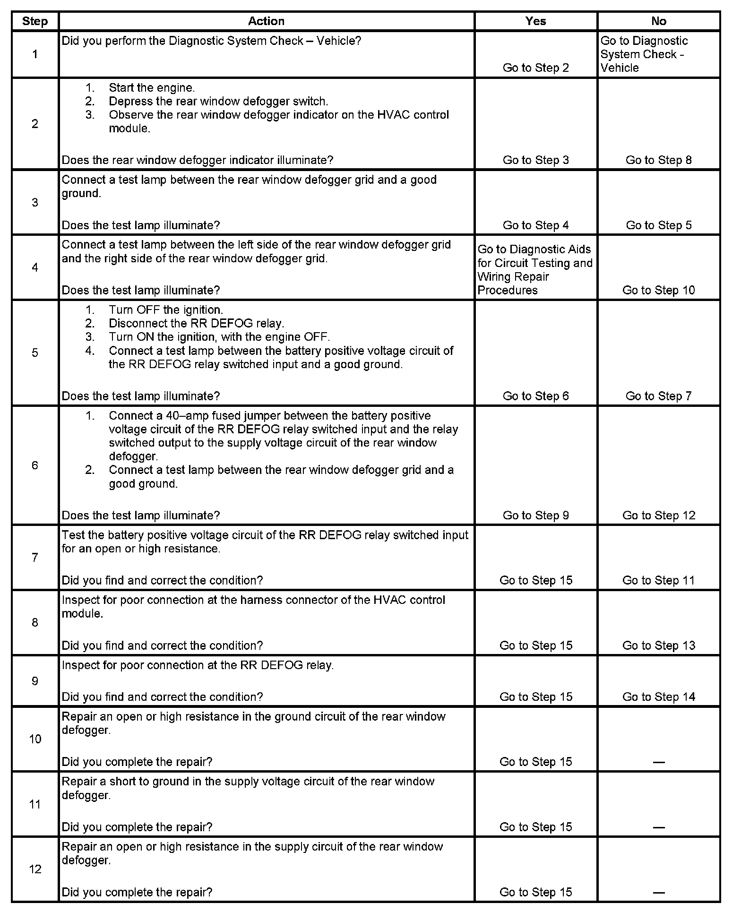
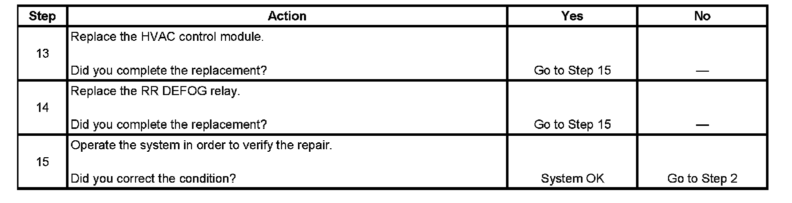

Operation CHARM
: Car repair manuals for everyone.
Home
>>
Cadillac
>>
2007
>>
Escalade ESV AWD V8-6.2L
>>
Repair and Diagnosis
>>
Windows and Glass
>>
Heated Glass Element
>>
Testing and Inspection
>>
Symptom Related Diagnostic Procedures
Symptom Related Diagnostic Procedures
Step 1 - Step 12:

Step 13 - Step 15:
